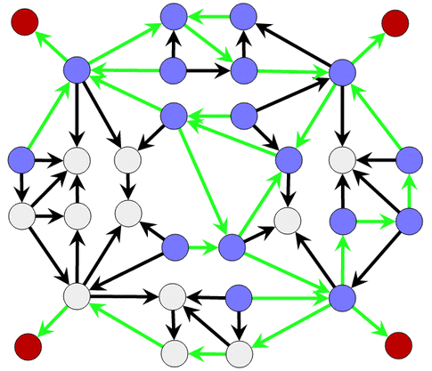

Points of Departure
Which circles can connect you to the Red Circle to the Red Circles by following the arrows? Click on the cirles to mark it Blue.
Hint: Click on the arrows to color them for a better view.
Which circles can connect you to the Red Circle to the Red Circles by following the arrows? Click on the cirles to mark it Blue.
Hint: Click on the arrows to color them for a better view.
Une manière naïve de résoudre le sujet est de se demander, pour chaque cercle, s'il existe un chemin permettant d'aller au cercle rouge.
Une manière plus astucieuse de résoudre le sujet consiste à partir du cercle rouge, et à remonter les flèches à l'envers, en coloriant en bleu tous les cercles que l'on peut atteindre ainsi.

Une manière naïve de résoudre le sujet est de se demander, pour chaque cercle, s'il existe un chemin permettant d'aller à chacun des deux cercles rouges.
Une manière plus astucieuse de résoudre le sujet consiste à d'abord repérer que, pour pouvoir rejoindre les deux cercles rouges, il faut forcément passer par le cercle central (le cercle bleu du milieu). Ensuite, il suffit de remonter les flèches à l'envers en partant de ce cercle bleu central, en coloriant en bleu tous les cercles que l'on peut atteindre ainsi.
On peut simplifier le problème en étudiant la structure générale de la figure. Si l'on enlève les cercles du milieu qui ne servent à rien, et si l'on "compresse" les groupes de 4 noeuds situés sur chacun des 4 bords, on se ramène à un petit problème sur lequel il est relativement aisé d'identifier les cercles qui permettent d'accéder aux 4 noeuds rouges.
Les chemins noirs de la figure simplifiée ci-dessus correspondent aux chemins coloriés en verts sur la figure d'origine ci-dessous :

On peut alors revenir au problème de départ, et se demander quels sont les cercles qu'il reste à colorier en bleu. On peut faire l'observation suivante : si une flèche part d'un cercle gris et pour rejoindre un cercle bleu, alors on peut colorier le cercle gris en bleu. En effet, de ce cercle gris on peut aller au cercle bleu en utilisant cette flèche, puis ensuite du cercle bleu on peut aller à tous les cercles rouges (puisque c'est la propriété des cercles bleus).
Du coup, on va répéter l'opération suivante : pour chaque cercle gris, regarder s'il y a une flèche vers un cercle bleu. Si oui, on colorie le cercle gris en bleu (et on peut aussi colorier la flèche correspondante en vert). Sinon, on cherche un autre cercle gris. On répète le processus jusqu'à ce qu'on ne puisse plus rien colorier en bleu. On a alors terminé.

Les cercles et les flèches représentent une structure très fréquente en information, appelée graphe. Des graphes peuvent décrire des structures concrètes, comme par exemple des réseaux routiers ou des réseaux informatiques. Ils peuvent également décrire des structures abstraites, comme par exemple, un réseau social sur lequel chaque cercle représente une personne et chaque flèche représente le fait qu'une personne suit le fil d'actualité d'une autre personne.
La question que posait ce sujet porte sur la propriété d'accessibilité : quels sont les cercles à partir desquels on peut accéder à un ensemble d'autres cercles. Il existe des algorithmes très performants permettant à des ordinateurs de répondre de manière entièrement automatique à cette question et de traiter des cas avec des milliards de cercles et de flèches.